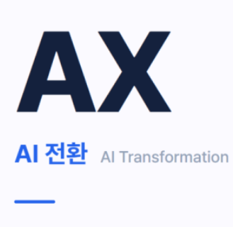

먼저 듣습니다
어떤 문제를 풀고 싶은지, 무엇이 달라지길 바라는지 정리합니다.

안정적인 IT 운영부터 AI를 활용한 마케팅까지.
막연했던 아이디어를 구체적인 실행으로 연결합니다.
가입 없이, 내게 필요한 첫 단계를 확인해 보세요.
한 번에 하나씩, 다음 단계가 선명하게.
작업 방식을 설명하기 위한 화면 예시입니다.
따로 떨어진 기술이 아니라, 함께 연결되는 가능성
운영을 이해하고, 새로운 도구를 실험하며,
사람에게 닿는 방법까지 고민합니다.
안정적인 운영과 더 나은 개발 방법을 고민합니다. 매일 반복하는 일에서 개선할 지점을 찾아봅니다.
새로운 AI 기술을 배우고 직접 실험합니다. 흥미로운 기능을 넘어 실제 업무에 맞는 쓰임새를 탐구합니다.
가설 → 콘텐츠 → 확인 → 개선
AI로 아이디어를 구체화하고 사람들과 연결하는 방법을 탐구합니다. 콘텐츠의 시작부터 반응을 살피는 과정까지 함께 생각합니다.
해보기는 해 봤어?
가능성은 작은 실행에서 시작됩니다.
기존 소개 문구에 담긴, 이 사이트의 방향입니다.
어떤 문제를 풀고 싶은지, 무엇이 달라지길 바라는지 정리합니다.
처음부터 크게 만들기보다, 확인할 수 있는 작은 시도부터 시작합니다.
결과를 기록하고 다음 시도에 반영하며 더 나은 방법을 찾습니다.
지금 고민 중인 분야를 골라보세요.
시작에 필요한 첫 단계를 정리해 드립니다.
이 페이지 안에서 확인하는 무료 가이드입니다. 개인정보를 받지 않습니다.